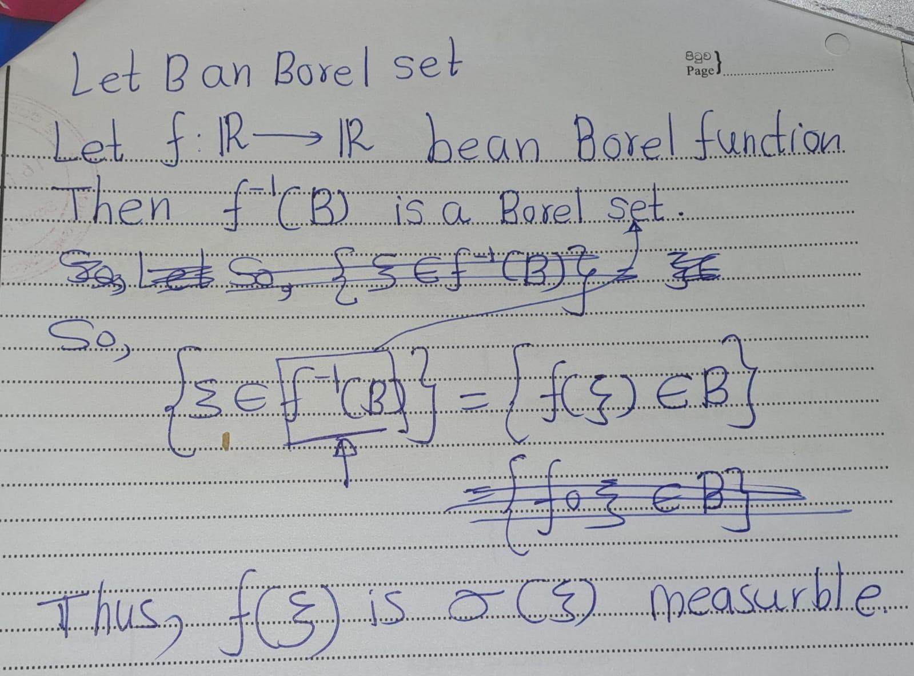

Chapter 2 Introduction
2.1 Events and Probability
Definition 2.1 Let \(\Omega\) be a non-empty set. A \(\sigma\)-field \(\mathcal{F}\) on \(\Omega\) is a family of subsets of \(\Omega\) such that:
- The empty set \(\emptyset\) belongs to \(\mathcal{F}\);
- If \(A\) belongs to \(\mathcal{F}\), then so does the complement \(\Omega \setminus A\);
- If \(A_1, A_2, \ldots\) is a sequence of sets in \(\mathcal{F}\), then their union \(A_1 \cup A_2 \cup \cdots\) also belongs to \(\mathcal{F}\).
Example 2.1 The family of Borel sets \(\mathcal{F}= B(\mathbb{R})\) s a \(\sigma\)-field on IR. We recall that \(B(\mathbb{R})\) is the smallest \(\sigma\)-field containing all intervals in \(\mathbb{R}\).
Definition 2.2 Let \(\mathcal{F}\) be a \(\sigma\)-field on \(\Omega\). A probability measure \(P\) is a function \(P : \mathcal{F} \to [0, 1]\) such that
- \(P(\Omega) = 1\);
- if \(A_1, A_2, \ldots\) are pairwise disjoint sets (that is, \(A_i \cap A_j = \emptyset\) for \(i \neq j\)) belonging to \(\mathcal{F}\), then \[ P\left(\bigcup_{i=1}^{\infty} A_i\right) = \sum_{i=1}^{\infty} P(A_i); \]
- The triple \((\Omega, \mathcal{F}, P)\) is called a probability space. \
- The sets belonging to \(\mathcal{F}\) are called events. \
- An event \(A\) is said to occur almost surely (a.s.) whenever \(P(A) = 1\).
Example 2.2 Let consider,
- \(\Omega=[0, 1]\) with the
- \(\sigma\)-field =\(\mathcal{F} = \mathcal{B}([0, 1])\) of Borel sets \(B \subseteq [0, 1]\), and
- Lebesgue measure \(P = \text{Leb}\) on \([0, 1]\).
Then \((\Omega, \mathcal{F}, P)\) is a probability space.
Recall that \(\text{Leb}\) is the unique measure defined on Borel sets such that \[\text{Leb}[a, b] = b - a\] for any interval \([a, b]\). (In fact, \(\text{Leb}\) can be extended to a larger \(\sigma\)-field, but we shall need Borel sets only.)
Exercise 2.1 Show that if \(A_1, A_2, \ldots\) is an expanding sequence of events, that is \[ A_1 \subseteq A_2 \subseteq A_3 \subseteq \cdots \]
then \[ P\left(\bigcup_{n=1}^{\infty} A_n\right) = \lim_{n \to \infty} P(A_n). \]
Similarly, if \(A_1, A_2, \ldots\) is a contracting sequence of events, that is, \[ A_1 \supseteq A_2 \supseteq A_3 \supseteq \cdots \]
then \[ P\left(\bigcap_{n=1}^{\infty} A_n\right) = \lim_{n \to \infty} P(A_n). \]
Hint: Write \(A_1 \cup A_2 \cup \cdots\) as the union of a sequence of disjoint events: start with \(A_1\), then add a disjoint set to obtain \(A_1 \cup A_2\), then add a disjoint set again to obtain \(A_1 \cup A_2 \cup A_3\), and so on. Now that you have a sequence of disjoint sets, you can use the definition of a probability measure. To deal with the product \(A_1 \cap A_2 \cap \cdots\), write it as a union of some events with the aid of De Morgan’s law.


Lemma 2.1 (Borei-Cantelli) Let \(A_1, A_2, \ldots\) be a sequence of events such that \(P(A_1) + P(A_2) + \cdots < \infty\) and let \(B_n = A_n \cup A_{n+1} \cup \cdots\). Then \(P(B_1 \cap B_2 \cap \cdots) = 0\).
Exercise 2.2 Prove the Borel-Cantelli lemma above.
Hint: \(B_1, B_2, \ldots\) is a contracting sequence of events.


2.2 Random Variables
Definition 2.3 If \(\mathcal{F}\) is a \(\sigma\)-field on \(\Omega\), then a function \(X : \Omega \to \mathbb{R}\) is said to be \(\mathcal{F}\)-measurable if
\[\{\omega \in \Omega : X(\omega) \in B\}=X^{-1}(\omega)\]
for every Borel set \(B \in \mathcal{B}(\mathbb{R})\).
If \((\Omega, \mathcal{F}, P)\) is a probability space, then such a function \(X\) is called a random variable.
Definition 2.4 The \(\sigma\)-field \(\sigma(X)\) generated by a random variable \(X : \Omega \to \mathbb{R}\) consists of all sets of the form \(\{\omega \in \Omega : X(\Omega)\in B\}\), where \(B\) is a Borel set in \(\mathbb{R}\).
Definition 2.5 The \(\sigma\)-field \(\sigma(\{X_i : i \in I\})\) generated by a family \(\{X_i : i \in I\}\) of random variables is defined to be the smallest \(\sigma\)-field containing all events of the form \(\{X_i \in B\}\), where \(B\) is a Borel set in \(\mathbb{R}\) and \(i \in I\).
Exercise 2.3 We call \(f : \mathbb{R} \to \mathbb{R}\) a Borel function if the inverse image \(f^{-1}(B)\) of any Borel set \(B\) in \(\mathbb{R}\) is a Borel set. Show that if \(f\) is a Borel function and \(X\) is a random variable, then the composition \(f(X)\) is \(\sigma(X)\)-measurable.
Hint: Consider the event \(\{f(X) \in B\}\), where \(B\) is an arbitrary Borel set. Can this event be written as \(\{X \in A\}\) for some Borel set \(A\)?

Lemma 2.2 (Doob-Dynkin) Let \(X\) be a random variable. Then each \(\sigma(X)\)-measurable random variable \(\eta\) can be written as \[ \eta = f(X) \] for some Borel function \(f : \mathbb{R} \to \mathbb{R}\).
Proof. Omiited
Definition 2.6 Every random variable \(X : \Omega \to \mathbb{R}\) gives rise to a probability measure \[ P_X(B) = P\{X \in B\} \] on \(\mathbb{R}\) defined on the \(\sigma\)-field of Borel sets \(B \in \mathcal{B}(\mathbb{R})\). We call \(P_X\) the distribution of \(X\). The function \(F_X : \mathbb{R} \to [0, 1]\) defined by \[ F_X(x) = P\{X \leq x\} \] is called the cumulative distribution function (CDF) of \(X\).
Exercise 2.4 Show that the distribution function \(F\) is non-decreasing, right-continuous, and \[ \lim_{x \to -\infty} F_{\xi}(x) = 0, \quad \lim_{x \to +\infty} F_{\Xi}(x) = 1. \]
For example, to verify right-continuity show that \(F_{\xi}(x_n) \to F_{\xi}(x)\) for any decreasing sequence \(x_n\) such that \(x_n \to x\). You may find the results of Exercises useful.


Definition 2.7 If there is a Borel function \(f: \mathbb{R} \to \mathbb{R}\) such that for any Borel set \(B \subset \mathbb{R}\) \[ P\{\xi \in B\} = \int_B f_\xi(x) \, dx, \] then \(\xi\) is said to be a random variable with absolutely continuous distribution and \(f_\xi\) is called the density of \(\xi\). If there is a (finite or infinite) sequence of pairwise distinct real numbers \(x_1, x_2, \ldots\) such that for any Borel set \(B \subset \mathbb{R}\) \[ P\{\xi \in B\} = \sum_{x_i \in B} P\{\xi = x_i\}, \] then \(\xi\) is said to have a discrete distribution with values \(x_1, x_2, \ldots\) and mass \(P\{\xi = x_i\}\) at \(x_i\).
Exercise 2.5 Suppose that \(\xi\) has a continuous distribution with density \(f\). Show that \(f\) is continuous at \(x\).
Express \(F(x)\) as an integral of \(f\).

Show that if \(\xi\) has discrete distribution with values \(x_1, x_2, . . . ,\) then \(F_\xi\) is constant on each interval (s, t] not containing any of the x_i’s and has jumps of size P {= x_i} at each x_i· Hint The increment Fe ( t) - Fe ( s ) is equal to the total mass of the Xi’s that belong to the interval [s, t).
Definition 2.8 The joint distribution of several random variables \(\xi_1, \ldots, \xi_n\) is a probability measure \(P_{\xi_1, \ldots, \xi_n}\) on \(\mathbb{R}^n\) such that \[P_{\xi_1, \ldots, \xi_n}(B)=P\left\{\xi_1, \ldots, \xi_n\in B\right\}\] for any Borel set \(B\) in \(\mathbb{R}^n\). If there is a Borel function \(f_{\xi_1, \ldots, \xi_n} : \mathbb{R}^n \to \mathbb{R}\) such that
\[ P\{(\xi_1, \ldots, \xi_n) \in B\} = \int_B f_{\xi_1, \ldots, \xi_n}(x_1, \ldots, x_n) \, dx_1 \cdots dx_n \]
for any Borel set \(B\) in \(\mathbb{R}^n\), then \(f_{\xi_1, \ldots, \xi_n}\) is called the joint density of \(\xi_1, \ldots, \xi_n\).
Definition 2.9 A random variable \(\xi : \Omega \to \mathbb{R}\) is said to be integrable if
\[ \int_\Omega |\xi| \, dP < \infty. \]
The integral
\[ \mathbb{E}(\xi) = \int_\Omega \xi \, dP \]
exists and is called the expectation of \(\xi\). The family of integrable random variables \(\xi : \Omega \to \mathbb{R}\) will be denoted by \(L^1\) or, in case of possible ambiguity, by \(L^1(\Omega, \mathcal{F}, P)\).
Example 2.3 The indicator function \(\mathbf{1}_A\) of a set \(A\) is equal to 1 on \(A\) and 0 on the complement \(\Omega \setminus A\) of \(A\). i.e.: \[1_A(a):=\begin{cases} 1 & \text{ if } a \in A \\0 & \text{ if } a \not\in A\end{cases} \]
For any event \(A\), \[\mathbb{E}[1_A]=\int_\Omega 1_A dP=P(A)\]
we say that \(\eta : \Omega \to \mathbb{R}\) is a step function if
\[ \eta = \sum_{i=1}^n \eta_i \mathbf{1}_{A_i}, \]
where \(\eta_1, \ldots, \eta_n\) are real numbers and \(A_1, \ldots, A_n\) are pairwise disjoint events. Then, \[\mathbb{E}[\eta]=\int_\Omega \eta dP=\sum_{i=1}^n\eta_i \int_\Omega 1_{A_i} dP=\sum_{i=1}^n \eta_i P(A_i)\]
Exercise 2.6 Show that for any Borel function \(h : \mathbb{R} \to \mathbb{R}\) such that \(h(X)\) is integrable, \[ \mathbb{E}(h(X)) = \int h(x) \, dP_X(x). \]
First verify the equality for step functions \(h : \mathbb{R} \to \mathbb{R}\), then for non-negative ones by approximating them by step functions, and finally for arbitrary Borel functions by splitting them into positive and negative parts
More to go …
2.3 Conditional Probability and Independence
Definition 2.10 For any events \(A, B \in \mathcal{F}\) such that \(P(B) \neq 0\), the conditional probability of \(A\) given \(B\) is defined by \[P(A \mid B) = \frac{P(A \cap B)}{P(B)}\]
Exercise 2.7 Prove the total probability formula for any event \(A \in \mathcal{F}\) and any sequence of pairwise disjoint events \(B_1, B_2, \ldots \in \mathcal{F}\) such that \(B_1 \cup B_2 \cup \cdots = \emptyset\) and \(P(B_n) \neq 0\) for any \(n\).
Hint: \(A = (A \cap B_1) \cup (A \cap B_2) \cup \cdots\)

Definition 2.11 Two events \(A, B \in \mathcal{F}\) are called independent if \[ P(A \cap B) = P(A)P(B). \] In general, we say that \(n\) events \(A_1, \ldots, A_n \in \mathcal{F}\) are independent if for any indices \(1 \leq i_1 < i_2 < \cdots < i_k \leq n\), \[ P(A_{i_1} \cap A_{i_2} \cap \cdots \cap A_{i_k}) = P(A_{i_1})P(A_{i_2}) \cdots P(A_{i_k}). \]
Exercise 2.8 Let \(P(B) \neq 0\). Show that \(A\) and \(B\) are independent events if and only if \[ P(A \mid B) = P(A). \] If \(P(B) \neq 0\), then you can divide by it.

Definition 2.12 Two random variables \(\xi\) and \(\eta\) are called independent if for any Borel sets \(A, B \in \mathcal{B}(\mathbb{R})\), the two events \[ \{ \xi \in A \} \text{ and } \{ \eta \in B \} \] are independent.
We say that \(n\) random variables \(\xi_1, \ldots, \xi_n\) are independent if for any Borel sets \(B_1, \ldots, B_n \in \mathcal{B}(\mathbb{R})\), the events \[ \{ \xi_1 \in B_1 \}, \{ \xi_2 \in B_2 \}, \ldots, \{ \xi_n \in B_n \} \] are independent.
In general, a (finite or infinite) family of random variables is said to be independent if any finite number of random variables from this family are independent.
Proposition 2.1 If two integrable random variables \(\xi, \eta : \Omega \to \mathbb{R}\) are independent, then they are uncorrelated, i.e., \[ E(\xi \eta) = E(\xi) E(\eta), \] provided that the product \(\xi \eta\) is also integrable.
If \(\xi_1, \ldots, \xi_n : \Omega \to \mathbb{R}\) are independent integrable random variables, then \[ E(\xi_1 \xi_2 \cdots \xi_n) = E(\xi_1) E(\xi_2) \cdots E(\xi_n), \] provided that the product \(\xi_1 \xi_2 \cdots \xi_n\) is also integrable.
Definition 2.13 Two \(\sigma\)-fields \(\mathcal{G}\) and \(\mathcal{H}\) contained in \(\mathcal{F}\) are called independent if any two events \[ A \in \mathcal{G} \text{ and } B \in \mathcal{H} \] are independent.
Similarly, any finite number of \(\sigma\)-fields \(\mathcal{G}_1, \ldots, \mathcal{G}_n\) contained in \(\mathcal{F}\) are independent if any \(n\) events \[ A_1 \in \mathcal{G}_1, \ldots, A_n \in \mathcal{G}_n \] are independent.
In general, a (finite or infinite) family of \(\sigma\)-fields is said to be independent if any finite number of them are independent.
Exercise 2.9 Show that two random variables \(\xi\) and \(\eta\) are independent if and only if the \(\sigma\)-fields \(\sigma(\xi)\) and \(\sigma(\eta)\) generated by them are independent.
The events in \(\sigma(\xi)\) and \(\sigma(\eta)\) are of the form \(\{\xi \in A\}\) and \(\{\eta \in B\}\), where \(A\) and \(B\) are Borel sets.

Sometimes it is convenient to talk of independence for a combination of random variables and \(\sigma\)-fields.
Definition 2.14 We say that a random variable \(\xi\) is independent of a \(\sigma\)-field \(\mathcal{G}\) if the \(\sigma\)-fields \[ \sigma(\xi) \text{ and } \mathcal{G} \] are independent. This can be extended to any (finite or infinite) family consisting of random variables or \(\sigma\)-fields or a combination of them both. Namely, such a family is called independent if for any finite number of random variables \(\xi_1, \ldots, \xi_m\) and \(\sigma\)-fields \(\mathcal{G}_1, \ldots, \mathcal{G}_n\) from this family, the \(\sigma\)-fields \[\sigma(\xi_1),...,\sigma(\xi_m),\mathcal{G}_1,..,\mathcal{G}_n\] are independent.